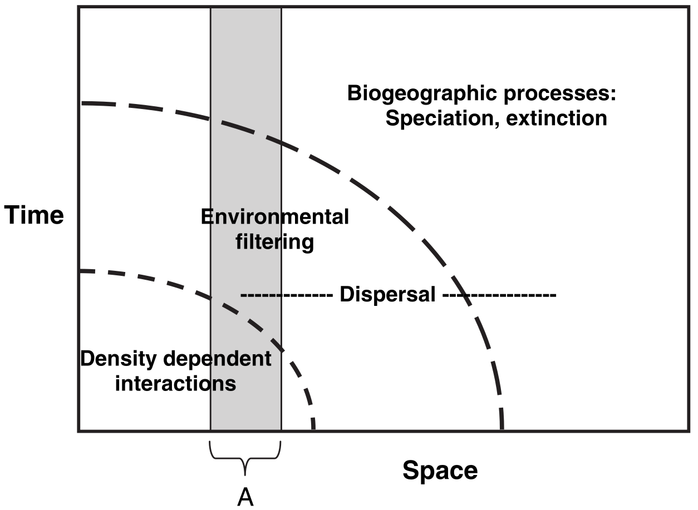
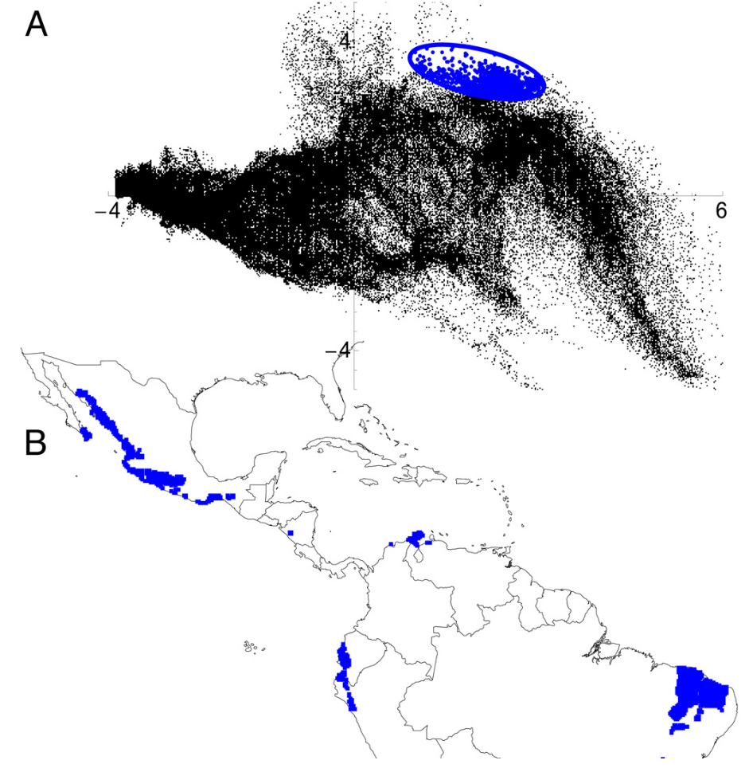
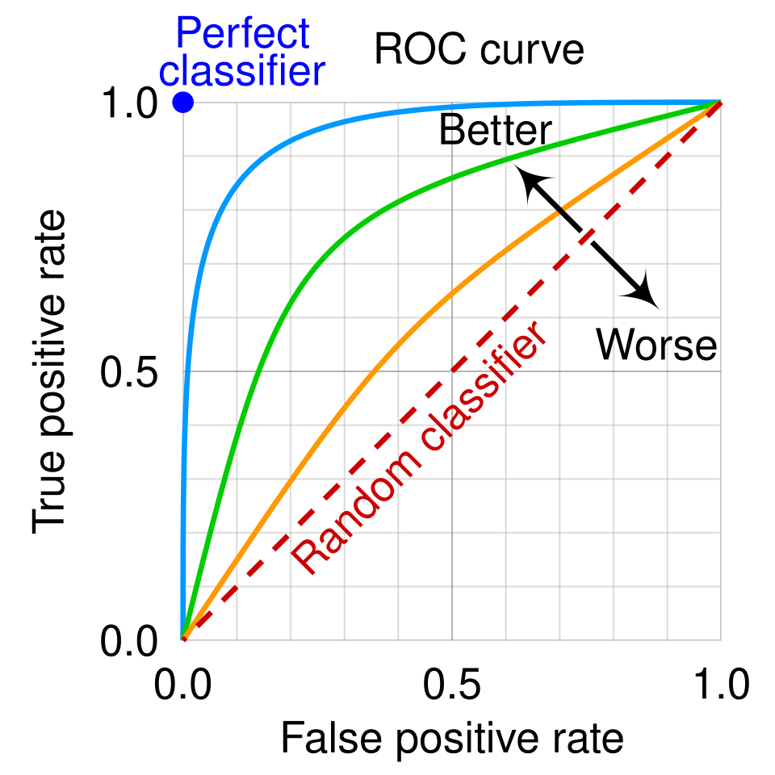

8 Species Distribution Modelling
8.1 Overview
Modelling diseases is tough. You need to understand how they’re transmitted, how they affect hosts, and the rate at which they grow. So understanding vector-borne diseases is arguably even worse, because now you also need to understand how the vectors of those diseases move around, are (not) affected by a pathogen they’re transmitting, the rate at which they grow, and how they transmit that pathogen on. What a nightmare!
Luckily for us, there is a whole field of study - distribution modelling - that focuses on understanding the conditions under which species (including vectors) can move around. It’s a massive field (arguably it’s the whole of ecology!) and so there isn’t really time to do it justice in one session. But even more luckily for us, there is a reasonably well-accepted set of standards you can adhere to when building a distribution model. In this tutorial, we’re going to go through that set of standards - which come from the Araujo et al. (2019) paper - and then show you how to apply them to model the distribution of a bat.
Your task, should you choose to accept it, is to:
- Listen to the lecture at the beginning of the session,
- Read through this handout,
- Run the code in this handout, and then
- See if you can improve the exemplar code for building a bat distribution model to make it score higher according to the Araujo et al. criteria.
8.2 What are ‘The Araujo et al. Criteria’
In a well-cited (~1000 citations at the time of writing) paper, a consortium of well-respected distribution modellers came up with a set of criteria by which the accuracy of distribution models could be judged. To be perfectly honest with you, I don’t think they’re necessarily the best criteria that we could come up with, but I do think they’re very good and they’re hard to disagree with (if you can’t tell, this is high praise!). This means they’re essentially perfect for use in a disease ecology or health setting: they’re reliable, trustworthy, and trusted. So if you want to publish a report for use by a policy-maker, or that will inform a decision, you really can’t do much better than by using these criteria.
These criteria are also very straightforward. There are lots of sub-criteria that we’ll go through now, but they boil down to four things:
- Make sure the data on where a vector is (not) found are reliable,
- Ensure the data you’ll use to predict where that vector could/will be make biological sense for that vector,
- Fit your statistical or mechanistic model properly, and
- Check that model and its predictions properly.
There are a lot of devils in the details that we’re leaving out here, but that’s what it boils down to. So let’s get stuck in.
8.3 Make sure your observation data aren’t rubbish
One of the great things about scientists is we’re all really weird, and we’re all really weird in unique and exciting ways. Ecologists tend to be weird in two particular ways: they’re absolutely obsessed with ‘spatio-temporal scaling’ and taxonomic identification. There are five different criteria by which the Araujo et al. review judges the ‘response variable’ of a distribution model - the data informing whether a species is present or absent in a particular place - but perhaps the most important, and counter-intuitive for a non-ecologist, are these two. So let’s focus on those two.
8.3.1 Spatio-temporal scaling

Full paper available here.
The figure above shows what distribution modellers and ecologists mean by spatio-temporal scaling. To an ecologist, when you look across a wider area of space, you are also implicitly taking into account a longer period of time. This means that the kinds of processes, and the kinds of statistical models you need to fit, vary depending on the spatial and temporal scale of interest. For example, if you wanted to predict how many species of plants would be found in a 10cm x 10cm patch of forest over the next five seconds, you wouldn’t really need to account for evolutionary forces. You just need to know the climate conditions right now, the plants found within a few meters of the patch (because they could disperse over), and then you’d be set. Short region, short period of time. But if you wanted to know how many species of plants would be found in a 100km x 100km patch… that would be more complicated. Within that patch there is a huge amount of variation in climate conditions, so you need to understand how species can move across landscapes within that patch, and as species can move over years/decades/centuries within that patch you need to go years/decades/centuries further back in time. That, in turn, means you need to start thinking about evolution - what kinds of species could, and have, evolved in that patch of land? But evolution can take millions of years… and so we need to think much further back in time. What a nightmare! But at least in the larger patch, you no longer care about tiny variations in climate between blades of grass - those kinds of processes are averaged out at the larger scale.
Believe it or not, that’s what Cavender-Bares et al. (2009) were trying to show with this figure. As you widen the spatial scale (horizontal axis) you widen the temporal scale (vertical axis), and so you have to change the kinds of processes you care about. This matters for modelling the distributions of vectors because you have to make sure the data you’re collecting are at the appropriate spatial and temporal scale for your question and vector species. There is no point in grouping recordings of mosquito presence/absence in ten-year increments across 10km x 10km grid-cells: individual mosquitoes don’t live that long or range that far. Thus there’s also no point in building your distribution model with data at that scale.
8.3.2 Taxonomic identification
If you’re an epidemiologist, you’re probably already very aware that it’s hard to identify what particular disease someone has. Imagine someone walks into a clinic and they say their head hurts and asks you what’s wrong with them. You would have to ask follow-up questions (where? for how long?), look at them (are they bleeding from somewhere? how are their pupils?), and maybe conduct follow-up tests (give them an X-ray or MRI). Not every test would be informative for every set of symptoms or disease, and someone who isn’t trained in interpreting a test, even if the right one is given, could make the wrong diagnosis.
Identifying vectors is much the same thing. For example, there are lots of different kinds of bats, and while they may all look the same to the casual observer they still aren’t the same species and they don’t necessarily carry the same diseases. Distribution modellers have access to a huge amount of data on different species through a number of sources, but the most commonly used (and largest) is GBIF. It scoops up data from all kinds of sources - peer-reviewed literature, government schemes, citizen science schemes - everything! And I will put my neck out on the line and say that if you’re not using GBIF you need to have a really good reason not to, because the biases induced by ignoring all that data are often (but not always) bigger than the biases induced by trying to do all the data collection and curation yourself.
But you do need to be aware of the biases in GBIF. There are different kinds of data you can pull in (‘human observations’ that are taken from direct sighting from anyone, ‘preserved specimens’ that are observations vouchered in a central repository somewhere, ‘machine observations’ that are computer-derived observations from recordings/pictures, and many more). There are also different levels of confidence in the observations (seen, dissected and confirmed, DNA-verified, and many more). What are you working with? This matters for modelling the distributions of vectors because you have to make sure the data you’re collecting is actually relevant to the species you have carefully defined as your vector. “Garbage in, garbage out”: if you feed in a load of data about unrelated species then all your model diagnostic checks might pass but you won’t learn anything about the species you actually care about.
8.3.3 Putting it into practice.
Below is some code that loads data on the pipistrelle bat from GBIF into R. Run it and make sure you’re comfortable with it.
We’ll be using the ohvbd package to help us out. It’s an R interface to the One Health VBD Hub, which indexes vector-borne disease data from GBIF, VectorByte (VecTraits and VecDyn), and AREAData. Here we use it to pin down exactly which species we’re asking GBIF about, and to find out which datasets our records come from.
# Load packages
# (load ohvbd before terra; terra has its own 'extract' function)
library(biomod2)
library(rnaturalearth)
library(geodata)
library(ohvbd)
library(terra)
# Get a map of Europe to use as a 'base' for plotting and searching
world <- ne_countries(scale = "large", returnclass = "sv")
europe_extent <- ext(-20,50,35,70) #Rough coordinates for EU
europe_shapefile <- crop(world, europe_extent)
# Pick a species to work with
genus_name <- "Pipistrellus"
species_name <- "pipistrellus"
full_name <- paste(genus_name, species_name, sep = " ")
# Match the name to the GBIF 'backbone' taxonomy. This gives us a single,
# unambiguous ID for the species (5218465), rather than relying on a
# text match of the name. Set returnids = FALSE to see the full match,
# including how confident GBIF is in it and the species' higher taxonomy.
taxon_key <- match_species(full_name)
# Download occurrences of that species
# (we're "only" downloading 10,000 of the ~3 million possible records;
# change 'end' if you want to get more)
europe_occurrences <- sp_occurrence(genus_name, species_name,
ext = europe_extent, down = T,
args = paste0("taxonKey=", taxon_key),
removeZeros = T, fixnames = T, end = 10000)
long_lats <- data.frame(cbind(europe_occurrences$lon, europe_occurrences$lat))
names(long_lats) <- c("long","lat")GBIF is a collection of thousands of separate datasets, and every record we’ve downloaded belongs to one of them (the datasetKey column). We can use ohvbd to search the VBD Hub for all the GBIF datasets that contain our species in our study area, and then see which of them our records actually came from.
# Search the VBD Hub for GBIF datasets containing our species in Europe
# (this can take ~30 seconds - there are thousands of them!)
europe_datasets <- search_hub(full_name, db = "gbif",
taxonomy = taxon_key,
locationpoly = as.polygons(europe_extent, crs = "EPSG:4326"),
simplify = FALSE)
# Count our records per dataset, and add on the dataset names
record_sources <- as.data.frame(table(datasetKey = europe_occurrences$datasetKey),
responseName = "n_records")
record_sources <- merge(record_sources,
data.frame(datasetKey = europe_datasets$id,
title = europe_datasets$title,
doi = europe_datasets$doi),
all.x = TRUE)
record_sources[order(-record_sources$n_records), ]OK, now it’s time to make it better. Can you:
- Figure out what the spatial resolution of the data is. Is it appropriate?
- Figure out where the data is coming from (machine observations, human observations, etc.). Are you happy with the choices? Look at
record_sources: how many of your records come from a single dataset? Are any of the datasets dedicated bat surveys? Would you trust some sources more than others? (Hint: you can pass other GBIF filters, such as"basisOfRecord=..."or"datasetKey=...", through theargsargument ofsp_occurrence.) - Can you filter out known mistakes in the spatial location of the observations?
- Go through the Araujo table. What medal rating would you give your analysis so far under the first group? Why? Ignore ‘1E’ in the table until you get to Pseudo-absences and model extent below.
- Check the above with a demonstrator (if you haven’t already!)
8.4 Make sure your environmental data aren’t rubbish
Distribution modellers care about the data used to predict species’ distributions just as much as they do the data they have on species’ distributions. Those data are often called ‘explanatory variables’ because they are the data that explain species’ distributions. They commonly include environmental conditions such as temperature or rainfall, but they can also include other factors such as the distributions of other species (e.g., species that might prey upon, or be food for, the species you care about).
8.4.1 Geographic space vs. environmental space
Space isn’t the final frontier. Distribution modellers often think in terms of two kinds of ‘space’: geographic space and environmental space. Geographic space is the kind of space you’re used to thinking about: the location and time at which an observation was made (e.g., the latitude, longitude, date, and time). Environmental space is the environmental conditions associated with that observation, such as the temperature, precipitation, or underlying geology.

Full paper available here.
This terminology is important to understand because you will very often hear, or read, distribution modellers talking about “E Space” or “G space” (for environmental and geographic space, respectively), and if you don’t know these terms you’ll think they’ve taken an illicit substance. This matters for modelling the distributions of vectors because the processes in your model are fit within E space and the biases are often in G space. If you’re going to fit a model that captures the processes relevant to your vector, you need to think about what, in E space, is important for that species. Take bats as an example. Bats often have temperature tolerances: they can’t survive in temperatures below a certain threshold at certain times of year. So, in order to model them well, you need to have a model that (1) accounts for the minimum temperature at that time of year and (2) you probably need to have a model that can account for a non-linearity in the response to temperature. We’re talking about environmental data right now, so we don’t need to think too much about #2 (but don’t forget about it!) but you definitely need the right geographic data. You might also want to think about how to fit a model that can account for those biases in G space (e.g., unevenly sampled data through time and across space), but that’s for another section…
8.4.2 Putting it into practice
Below is some code that loads some environmental data for use with the pipistrelle data. Run it and make sure you’re comfortable with it.
# Get present-day BIOCLIM data (see https://www.worldclim.org/data/bioclim.html)
europe_bioclim <- worldclim_global(res = "10", var = "bio", path = ".")
europe_bioclim <- terra::crop(europe_bioclim, europe_extent)
# Get some future predictions
europe_bioclim_future <- cmip6_world(model = "ACCESS-CM2", ssp ="585", time = "2061-2080", var = "bioc", res = "10", path = ".")
europe_bioclim_future <- terra::crop(europe_bioclim_future, europe_bioclim)OK, now it’s time to make it better. Can you:
- Figure out what the spatial resolution of the environmental data is. Is it appropriate and does it match to the scale of the bat data?
- Do you have any idea of the uncertainty associated with the data? How accurate is it? Can you find out?
- Go through the Araujo table. What medal rating would you give your analysis so far under the first and second groups? Why?
- Can you improve your rating by making use of other data? Consider Googling CHELSA and AREAData (warning: your demonstrators are contractually obliged to like analyses that make use of AREAData). You can load AREAData straight into R using
ohvbd(see below). - Check the above with a demonstrator (if you haven’t already!)
BIOCLIM gives you long-term averages, but bats (and vectors) experience the weather on the day they were seen. AREAData provides daily climate data (2020 onwards) averaged across countries, provinces, and districts. The code below attaches the daily temperature for the first week of January 2025 to each of our observations, using the country each one falls in:
# Download daily temperatures, averaged per country (gid = 0);
# gid = 1 gives provinces/states and gid = 2 gives districts/counties
# (warning: those are much bigger downloads!)
# Other metrics include "relhumid", "precip", "uv", and "popdens"
temp_areadata <- fetch_ad(metric = "temp", gid = 0)
# Add a column for each day between targetdate and enddate (exclusive)
occurrences_temp <- assoc_ad(europe_occurrences[, c("lon", "lat", "year", "month", "day")],
temp_areadata,
targetdate = "2025-01-01", enddate = "2025-01-08",
gid = 0, lonlat_names = c("lon", "lat"))
head(occurrences_temp)Think about the spatial and temporal scale of these data, compared to the BIOCLIM data and to the bat data. Every observation in the same country gets the same temperature: is that a problem? AREAData values are averages across administrative regions (not a regular grid), so they can’t be fed into BIOMOD_Projection the way BIOCLIM rasters can. How could you use them? (Hint: are your observations from places and times that cover the range of conditions bats experience?)
8.5 Model building
Model building is, I think, the hardest one to describe because it’s the most contentious. Quite reasonably, researchers often want to know what the best model to use to model a species’ distribution is, but sadly there rarely is a “best” model. I like to think of it as a case of every model being, objectively, the best at fitting the kind of model it is. It’s just that, subjectively, we often want models that emphasise different things. That said, there are a few general helpers we can make use of.
8.5.1 Pseudo-absences and model extent
I’ve been a very naughty boy: I’ve saved a discussion of pseudo-absences and model extent until this section, even though strictly speaking they’re not in section 3 in their framework. That’s because, while Araujo et al. put pseudo-absences in the first section (and I really can see why), I think it’s hard to talk about them without talking about model-fitting. And I’m writing this tutorial, not them, so I can do whatever I want. Sorry if it’s a bit confusing to talk about criterion 1E in the model-building section.
When modelling where species are found, it’s very useful to know where they’re not found. This absence information can help us determine what the limits to species’ distributions are, for example. The problem is that we rarely, if ever, have data on where species weren’t found. There are millions of species on Earth and essentially infinite places to look for them, and it’s hard enough to store where species were seen on GBIF let alone where species weren’t seen. Further, when people go out surveying, they are often looking for something and it turns out that humans quite often miss things they’re not looking for, so we don’t have a lot of surveys of absences.
This matters for modelling the distributions of vectors because, as a result, species distribution models generate ‘pseudo-absences’ - they make up absences - in order to be able to fit statistical models. With the notable exception of one-class support-vector machines (which are very good methods - come take my class in them or ask me about them if you like) we cannot fit species distribution models with data only on where species are seen. Thus models randomly pick from the ‘background’ of the model a series of random points where species weren’t seen and treat those as if they were real absences and then fit the models.
If this seems awful to you, then fair enough because it seems awful to me too, but with the exception of one-class support vector machines that’s the only option we have. There are ways of doing pseudo-absences in a sensible way, but the most important rules of thumb are:
- Read what the algorithm is doing and make sure its assumptions are appropriate for your species,
- Make sure you’ve got data from across a wide enough region (both in G and E space) that you have picked up conditions where the species isn’t found, and
- Do what randomisation you are using for the pseudo-absences lots of times so you can average across the uncertainty it introduces.
If you are ever reading a distribution modelling paper and it doesn’t mention pseudo-absences somewhere then honestly you can just put it down and read something else. It’s that important: pseudo-absences are a big deal.
8.5.2 Distribution models are like regular statistical models so check them properly
Would you ever fit a statistical model without checking whether the explanatory variables were correlated? Don’t answer because I’m sure you would (I know I have!) but we really mustn’t when fitting distribution models. Environmental data are often extremely ‘spatially auto-correlated’, which means that points that are nearby each other tend to be similar. They’re often very correlated in terms of underlying processes: places where it rains a lot tend to have very damp soil, and places where there’s high solar radiation tend to be very hot. These correlated processes and patterns can bias the distribution model you get in lots of very confusing ways. For example, if you have lots of variables that are similar (e.g., where it’s hot, it’s also very dry, and there’s also not a lot of trees) then those variables will ‘compete’ with one-another for variance, such that the three combined seem important in your model but each separately doesn’t seem very important.
Would you ever fit a statistical model without making sure that any bias or uncertainty in your underlying data isn’t accounted for? Well, again, let’s be honest you probably have, but the data we use for distribution models (normally taken from GBIF) are extremely biased. There are essentially entire fields of study devoted to understanding what kinds of species people are more likely to spot, and how to account for biases in where people go looking for species. The sampling effort is extremely uneven across the Earth, and if you’re not careful you can end up building a distribution model of where people like to go looking for species (warmer-than-average, drier-than-average, richer-than-average places) and not where your vector actually likes to live.
This matters for modelling the distributions of vectors because otherwise your results will be completely wrong. There won’t be an easy way to tell, from inspecting the model or the outputs, whether the model is totally wrong or not. ‘Garbage in, garbage out’ as I keep saying: it is impossible to build a statistical model that can robustly and reliably detect when the data it’s given breaks the fundamental assumptions of the model itself (this is something called “Gödel’s incompleteness theorem”). So please check it yourself.
8.5.3 Bonus feature: learning about a distribution model algorithm
The package we’ll be using, ‘biomod2’, is a fantastic package in that it lets you fit lots of different kinds of models. There is absolutely no way to explain all of these in the time we have available, so I’m making you a deal: in the practical, I’ll give you the opportunity to vote on one of a subset of methods. I’ll then explain that method to you. So this is a placeholder to emphasise that, while you may be wondering right now “but what model am I fitting?!” I will explain that to you in the practical. Think of this as a ‘feature’, not a ‘bug’ - you get to choose the one you learn!
8.5.4 Putting it into practice
Below is some code that fits a model to your bat data. Run it and make sure you’re comfortable with it.
# Pull out a subset of training data
train_data <- data.frame(full_name = rep(1,nrow(long_lats)))
# Format the data
pipistrellus_data <- BIOMOD_FormatingData(resp.var = train_data,
expl.var = europe_bioclim,
resp.xy = long_lats,
resp.name = full_name,
PA.nb.rep = 5,
PA.nb.absences = nrow(long_lats),
PA.strategy = 'random',
filter.raster = T)
# Train the model
pipistrellus_model <- BIOMOD_Modeling(bm.format = pipistrellus_data,
modeling.id = 'GAM',
models = "GAM",
CV.strategy = 'kfold',
CV.k = 5,
CV.nb.rep = 3,
#CV.perc = 0.8,
OPT.strategy = 'default',
var.import = 3,
metric.eval = c('TSS','ROC'))In this tutorial, I’m not going through the details of how different kinds of statistical model are fit. I will be available, in the practical, to answer any questions you have. Don’t worry about the fact the code above splits the model into training and validation subsets; I’m about to explain what’s going on there in a few paragraphs’ time.
OK, now it’s time to make it better. Can you:
- Figure out how to check whether or not the explanatory variables are correlated? Hint: None of the code above checks this, you’ll have to do it yourself. You might find the function ‘pairs’ to be useful…
- What is the pseudo-absence strategy being used in this modelling approach? Hint: ‘PA’ stands for ‘pseudo-absence’. Do you agree with it? How could we make it better/worse?
- What are the spatial (‘geographic’) and environmental extents of the model? Are they wide enough? If you want to restrict your analysis to particular countries,
ohvbd::match_countries()will give you their outlines (which you can turn into aterraobject withvect(match_countries(...)$location_wkt, crs = "EPSG:4326"); beware of overseas territories!). - Go through the Araujo table. What medal rating would you give your analysis so far under the first and second groups? Why?
- Check the above with a demonstrator (if you haven’t already!)
8.6 Evaluating your model
This is the hardest section to fulfill (I think), and it’s the one that receives the least attention in the literature (I think): validation!
8.6.1 Training vs. validation data
When fitting a machine learning (‘AI’) model, we typically split our data into training and validation subsets. We train (build) the model on the training subset, and then we test how well the model performs in the validation subset. We don’t want to mix up the two kinds of data so that we’ve got some independent data to test our model with. Quite often we’re working with methods where it’s impossible to get a p-value (or even an \(r^2\) value) and so it’s quite hard to tell whether or not we’ve done a good job. That makes it absolutely vital to have a separate set of data to test what we’ve done with - we have no formal, proven statistical or mathematical framework to fall back on to see if we’ve done a good job or not.
This matters for modelling the distributions of vectors because if you don’t pick a proper set of validation data you’ll get the wrong answer. Are your validation data from the same region of E or G space? Well then are you absolutely certain that they’re actually independent data, and not just a collection of data taken from the same, unreliable scheme that generated your training data? Because if they are… then that’s not really an independent test of the data.
8.6.2 Receiver Operating Characteristic curves (ROC curves) and other summary statistics
This isn’t in ‘The Araujo et al. Criteria’ but it’s something I feel strongly about so I’m going to write about it here anyway. My tutorial, my rules!
When fitting a distribution model, it’s common to fall back on summary statistics that show how the model performed. Metrics such as ‘precision’ (how many of your predicted occurrences were correct) and recall (the fraction of occurrences your model predicted) are really loved by modellers. So too are receiver-operating characteristic curves (ROCs), where the rate of true-positives (correctly identifying occurrences) are plotted against rates of false-positives (incorrectly identifying occurrences) are plotted. Figure 3 shows such a curve: the important thing to notice is that you almost never, ever get a ‘perfect classifier’. If you identify more true positives (vertical axis) then you’re necessarily going to have more false-alarms (the horizontal axis). It’s a bit like fire alarms: we absolutely cannot have a fire alarm that misses a fire, so we have false-alarms where the alarm goes off because we need to set it so sensitive that it detects even very rare events.

Source: Wikipedia: Receiver operating characteristic. Image licence: CC BY-SA 4.0, via Wikimedia Commons.

The problem, however, is that these curves worked very well in World War II at identifying planes, but for species distribution models the data are auto-correlated and so you can’t just assume that a ROC-type approach will work. That the model tends to do very well in data that may not be perfectly independent is not really of interest (see above), and so we need to use an approach that is robust to those issues. For more on this, read about the criminally under-valued ‘temporal validation plots’ developed by a friend of mine (no conflict there!): Rapacciuolo et al. (2014) Methods in Ecology & Evolution 5(5): 407.
This matters for vector distribution models because any single estimator of whether a model is doing a good job will have similar problems. Gödel’s incompleteness theorem means that you can never fully understand a system: every statistical test has, itself, a set of assumptions that you need to test. So if you want to see whether your model is doing a good job, tests are good, but at the end of the day you have to check for yourself. So my advice? Plot out your model. See where in geographic and environmental space the model is doing well and make mistakes. Look for patterns: are there particular regions, or periods of time, that tend to do well? And then see if you can find a way to improve your model accordingly.
#Evaluating and plotting models
all_data_models <- get_built_models(pipistrellus_model, PA = "allData")
bm_PlotResponseCurves(pipistrellus_model, models = all_data_models)
names(europe_bioclim_future) <- names(europe_bioclim)
pipistrellus_current <- BIOMOD_Projection(bm.mod = pipistrellus_model,
proj.name = 'Current',
new.env = europe_bioclim,
models.chosen = 'all',
metric.binary = 'all',
metric.filter = 'all',
build.clamping.mask = TRUE)
pipistrellus_future <- BIOMOD_Projection(bm.mod = pipistrellus_model,
proj.name = 'Future',
new.env = europe_bioclim_future,
models.chosen = 'all',
metric.binary = 'TSS',
build.clamping.mask = TRUE)
current_projections <- get_predictions(pipistrellus_current, metric.binary = "TSS")
future_projections <- get_predictions(pipistrellus_future, metric.binary = "TSS")
pipistrelle_rangesize_change <- BIOMOD_RangeSize(
proj.current = current_projections,
proj.future = future_projections)
plot(current_projections$Pipistrellus.pipistrellus_allData_allRun_GAM)
plot(pipistrelle_rangesize_change$Diff.By.Pixel[[4]])OK, now it’s time to make it better. Can you:
- Figure out how to plot a ROC curve for your model?
- See where in space you’re under/over predicting occurrences?
- Go through the Araujo table. What medal rating would you give your analysis so far under all the groups? Why?
- Check the above with a demonstrator (if you haven’t already!)
8.7 The Final Test
You’ve made it this far? Good job! Now what you should do is repeat this process for a vector you are interested in yourself. Or, perhaps… enter our forecasting contest! And win a fabulous prize!…
If you do pick your own vector, ohvbd can help with more than just GBIF. search_hub("Aedes aegypti") will search the VBD Hub for datasets on your vector across all its databases, including VecTraits (lab measurements of traits such as thermal tolerances; useful for thinking about E space!) and VecDyn (population counts through time; useful for thinking about temporal scale and independent validation data). The ohvbd documentation shows how to download these.
Finally, wherever you get your data from, cite it! Everything you download from GBIF has a DOI (see the doi column in record_sources above), and ohvbd::fetch_citations() will find citations for VecTraits and VecDyn data. Data citation is how the people who collected the data get credit for it.